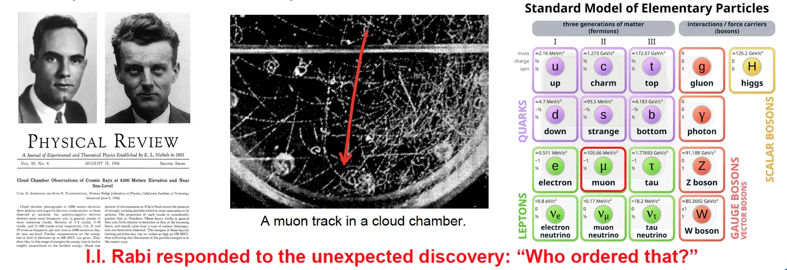

01/07About Muons缪子科普
About Muons缪子简介
Right now, cosmic muons are passing through you. Meet the particle behind them — where it comes from, why physicists love it, and how you can see it yourself.此刻，宇宙线缪子正穿过你的身体。来认识这种粒子——它从哪里来，物理学家为何钟爱它，以及你如何亲眼看见它。
Hold out your hand. In the second it takes to read this sentence, a muon — a heavy cousin of the electron, born at the edge of space — has probably passed straight through it. About ten thousand of them cross every square metre of the ground each minute, day and night, through roofs, buildings and people. You have never felt one. This page is about what they are, where they come from, and why physicists around the world, including our group in Shanghai, spend their careers studying them.
请伸出你的手。就在你读完这句话的一秒钟里，很可能已经有一个缪子——电子的“重表亲”，诞生于大气层的边缘——径直穿过了你的手掌。每分钟大约有一万个缪子穿过每平方米的地面，昼夜不停，穿过屋顶、楼房，也穿过我们的身体，而我们从未察觉。本页将告诉你：缪子是什么，它们从哪里来，以及为什么全世界的物理学家——包括我们在上海的课题组——愿意倾注整个职业生涯去研究它们。
Meet the muon认识缪子
The muon (symbol μ) is an elementary particle: as far as we know it is not made of anything smaller. It behaves almost exactly like an electron — same electric charge, same spin — but it is about 207 times heavier and it does not live long. After an average of 2.2 millionths of a second it decays into an electron and two neutrinos.
缪子（符号 μ）是一种基本粒子：就目前所知，它不由任何更小的东西构成。它的性质几乎和电子一模一样——电荷相同、自旋相同——但质量约为电子的207倍，而且寿命很短：平均仅过2.2微秒（百万分之2.2秒），就会衰变为一个电子和两个中微子。
In the Standard Model of particle physics, the muon is the second-generation charged lepton: the electron is the first, the muon the second, and the even heavier tau the third. Nobody yet knows why nature repeats the electron three times with different masses — one of the deep open questions the muon helps us probe.
在粒子物理标准模型中，缪子是第二代带电轻子：电子是第一代，缪子是第二代，更重的陶子是第三代。自然界为什么要把“电子”以不同质量重复三次？至今无人知晓——这正是缪子帮助我们探索的深层问题之一。
Born at the edge of space诞生于太空边缘
Most muons on Earth start with a cosmic ray: a proton or atomic nucleus hurled across the galaxy by exploding stars and other violent objects. When it strikes the top of the atmosphere, 15 kilometres or more above us, it smashes into a nitrogen or oxygen nucleus and creates a spray of new particles called an air shower. Among them are pions, which decay within a fraction of a microsecond — into muons.
地球上的大多数缪子起源于宇宙线：被超新星爆发等剧烈天体过程加速、穿越银河系而来的质子或原子核。它在距地面约15公里甚至更高的大气层顶部撞上氮或氧原子核，产生一大簇新粒子，称为“广延大气簇射”。其中包括π介子，它们在不到一微秒内衰变——变成缪子。
A puzzle solved by Einstein爱因斯坦解开的谜题
Here is the puzzle. A muon lives for 2.2 microseconds. Even at nearly the speed of light, that is only enough time to travel about 660 metres — so muons made 15 kilometres up should almost all decay long before reaching us. Yet we detect them on the ground in huge numbers.
谜题是这样的：缪子的寿命只有2.2微秒，即使以接近光速飞行，也只能走大约660米。照此计算，在15公里高空产生的缪子几乎都应在到达地面前衰变殆尽——然而我们在地面上却能探测到大量缪子。
The answer is Einstein's special relativity. A fast-moving clock runs slow as seen from the ground. A typical cosmic muon carries about 4 GeV of energy, so its internal clock runs roughly 40 times slower than ours, stretching its journey to tens of kilometres. First measured by Bruno Rossi and David Hall in 1941, and filmed by David Frisch and James Smith on Mount Washington in 1963, cosmic muons remain the classic everyday proof of time dilation.
答案来自爱因斯坦的狭义相对论：在地面上的人看来，高速运动的时钟会变慢。典型的宇宙线缪子能量约为4 GeV，它的“内部时钟”比我们慢约40倍，于是它能飞行数十公里。1941年，罗西（Bruno Rossi）与霍尔（David Hall）首次测量了这一效应；1963年，弗里施（David Frisch）和史密斯（James Smith）在华盛顿山拍摄了著名的实验影片。宇宙线缪子至今仍是“时间膨胀”最经典、最贴近日常的证据。
“Who ordered that?” — a short history“这是谁点的菜？”——缪子简史
When the muon turned up unexpectedly, physicist I. I. Rabi famously asked, “Who ordered that?” Nobody had predicted a heavier copy of the electron. Its story runs through some of the biggest discoveries of the twentieth century.
当缪子意外出现时，物理学家拉比（I. I. Rabi）留下了一句名言：“这是谁点的菜？”——当时没有任何理论预言过一个“更重的电子”。它的故事贯穿了二十世纪最重要的一系列物理发现。
Carl Anderson and Seth Neddermeyer find a new charged particle in cosmic rays, heavier than the electron but lighter than the proton.
安德森（Carl Anderson）与尼德迈耶（Seth Neddermeyer）在宇宙线中发现一种新的带电粒子，比电子重、比质子轻。
It is first mistaken for Yukawa's predicted nuclear-force particle. Experiments by Conversi, Pancini and Piccioni in Rome show it barely interacts with nuclei; the real Yukawa particle, the pion, is discovered in 1947.
它最初被误认为汤川秀树预言的核力传递粒子。罗马的孔韦尔西、潘奇尼与皮乔尼的实验表明，它几乎不与原子核发生强相互作用；真正的“汤川粒子”——π介子——于1947年被发现。
After T. D. Lee and C. N. Yang propose that the weak force may break mirror symmetry (parity), Garwin, Lederman and Weinrich confirm it using the decay chain π → μ → e — alongside C. S. Wu's cobalt-60 experiment.
李政道与杨振宁提出弱相互作用中宇称可能不守恒后，加尔文、莱德曼与魏因里希利用 π → μ → e 衰变链证实了这一点——与吴健雄的钴-60实验相互印证。
Lederman, Schwartz and Steinberger show that the neutrino born with a muon is a different kind from the electron's — the muon neutrino (Nobel Prize 1988).
莱德曼、施瓦茨与斯坦伯格证明，与缪子相伴产生的中微子不同于电子中微子——即缪子中微子（1988年诺贝尔物理学奖）。
Luis Alvarez uses cosmic muons to search the Pyramid of Khafre in Egypt for hidden chambers — the birth of muography.
阿尔瓦雷茨（Luis Alvarez）利用宇宙线缪子探寻埃及哈夫拉金字塔中的隐藏墓室——缪子成像技术由此诞生。
Laser spectroscopy of muonic hydrogen at PSI measures the proton as about 4% smaller than expected, sparking the “proton radius puzzle”.
PSI对缪子氢的激光光谱测量发现质子半径比预期小约4%，引发“质子半径之谜”。
The ScanPyramids team uses muons to discover a large hidden void inside the Great Pyramid of Giza.
ScanPyramids团队利用缪子在吉萨大金字塔内部发现了一个巨大的隐藏空腔。
The Fermilab Muon g−2 experiment, with our group as a member, releases its final measurement of the muon's magnetism to 127 parts per billion.
费米实验室 Muon g−2 实验（本课题组为成员）发布缪子磁矩的最终测量结果，精度达十亿分之127。


Why physicists love muons物理学家为何钟爱缪子
Muons are a sweet spot. They are heavy enough to be far more sensitive than electrons to new, undiscovered particles, yet they live long enough to be collected, stored and measured with extreme precision. That makes them one of the best tools we have to test the Standard Model — and to look for cracks in it.
缪子恰好处在一个“甜蜜点”上：它足够重，对未知新粒子的敏感度远高于电子；它又活得足够久，可以被收集、储存并进行极高精度的测量。因此，缪子是检验标准模型、寻找其“裂缝”的最佳工具之一。
- The muon's magnet (g−2). A muon spins like a tiny bar magnet. Quantum effects from every particle in nature — even ones not yet discovered — slightly change its strength. Comparing the measured value with theory is a stringent test of our understanding. Our work on Muon g−2 →
- 缪子的磁性（g−2）。缪子像一枚旋转的小磁针。自然界中所有粒子——包括尚未发现的粒子——的量子效应都会使其磁性产生微小改变。将实验值与理论预言比较，是对我们认知的严格检验。我们的 Muon g−2 研究 →
- A hidden lopsidedness (EDM). If the muon's charge were very slightly off-centre — an electric dipole moment — it would break time-reversal symmetry and could help explain why the universe is made of matter rather than antimatter. Our work on muEDM →
- 隐藏的“不对称”（EDM）。如果缪子的电荷分布有极其微小的偏离——即电偶极矩——就意味着时间反演对称性被破坏，或许能解释为什么宇宙由物质而非反物质构成。我们的 muEDM 研究 →
- Forbidden decays. In the Standard Model a muon essentially never turns directly into an electron and a photon. Experiments such as MEG at PSI have watched hundreds of trillions of muons without seeing it; a single genuine event would mean new physics.
- “禁戒”衰变。在标准模型中，缪子几乎不可能直接变成一个电子和一个光子。PSI的MEG等实验已观测了数百万亿个缪子，尚未看到这一过程；哪怕只发现一个真实事例，也意味着新物理。
- Atoms made with muons. Swap an atom's electron for a muon and it orbits 200 times closer to the nucleus, turning it into a sharp probe of nuclear size. Bind a positive muon to an electron and you get muonium, an exotic atom with no nucleus at all.
- 用缪子“造”原子。把原子中的电子换成缪子，它会在近200倍的距离上环绕原子核，成为测量原子核大小的灵敏探针。让正缪子与电子结合，则得到缪子素——一种没有原子核的奇异原子。
- A future muon collider. Because muons are heavy, they lose far less energy to radiation than electrons when bent in a ring. A muon collider could reach very high energies in a compact machine — a major topic at NuFact 2026, hosted by our group.
- 未来的缪子对撞机。缪子较重，在环形加速器中偏转时因辐射损失的能量远小于电子。缪子对撞机有望以紧凑的规模达到极高能量——这也是本课题组主办的 NuFact 2026 的核心议题之一。
Muons at work缪子的实际应用
Muons are not only for fundamental physics. Their penetrating power and their magnetism make them practical tools for science, engineering and heritage.
缪子不仅服务于基础物理。凭借强穿透力和磁性，它们已成为科学、工程与文物研究中的实用工具。
Muography: X-raying the very large缪子成像：给“庞然大物”拍X光
Like an X-ray, but using free cosmic muons and working on objects hundreds of metres across. Dense material absorbs or deflects more muons, so a detector placed below or beside an object records a shadow image of what is inside — without drilling, digging or any radiation source. Muography has been used to look inside pyramids and volcanoes, check nuclear-reactor debris and cargo containers, and, in our group, to monitor sediment above Shanghai's Outer Ring Tunnel beneath the Huangpu River.
它类似X光拍片，但利用的是天然免费的宇宙线缪子，可以“透视”数百米大小的物体。密度越高的物质吸收或偏转的缪子越多，因此放在物体下方或侧面的探测器就能记录其内部结构的“影子”——无需钻孔、开挖，也无需任何人工辐射源。缪子成像已被用于探测金字塔与火山内部、检查核反应堆残骸和集装箱；在本课题组，它被用于监测黄浦江下上海外环隧道上方的泥沙淤积。
Spying on materials (μSR)探查材料内部（μSR）
Fire spin-polarised muons into a material and they stop inside, acting as tiny compass needles. When each muon decays, its electron flies off preferentially along the muon's spin, so we can watch how the spins turn and learn about the magnetic fields deep inside superconductors, magnets, semiconductors and battery materials.
将自旋极化的缪子射入材料，它们会停留在内部，像一枚枚微型指南针。缪子衰变时放出的电子倾向于沿其自旋方向飞出，由此可以追踪自旋的转动，了解超导体、磁性材料、半导体和电池材料内部的微观磁场。
Reading elements without cutting无损分析元素成分
A negative muon captured by an atom emits X-rays whose energies are a fingerprint of the element. Because these X-rays are energetic and the muon's depth can be tuned, scientists can analyse ancient coins, artworks — and grains brought back from asteroid Ryugu — without damaging them.
负缪子被原子俘获后会发射X射线，其能量是元素的“指纹”。由于这些X射线能量高，且缪子的停留深度可以调节，科学家可以对古钱币、艺术品——乃至从小行星“龙宫”带回的颗粒——进行无损成分分析。
Muon-catalysed fusion缪子催化核聚变
A muon can pull two hydrogen nuclei so close together that they fuse at room temperature, then move on to catalyse the next pair — around a hundred fusions in its short life. It is not yet a power source, but it remains a fascinating demonstration of how a single particle can reshape chemistry.
缪子可以把两个氢原子核拉得足够近，使它们在室温下发生聚变，随后再去“催化”下一对——在短暂一生中可催化约一百次聚变。它目前还不能作为能源，但生动展示了一个粒子如何改变化学与核反应。
See muons for yourself亲眼看见缪子
You do not need a particle accelerator. Because muons rain down everywhere, you can see their tracks at home or in a classroom.
你不需要粒子加速器。缪子无处不在，在家里或教室里就能看到它们的径迹。
Build a cloud chamber自制云室
- Take a clear plastic or glass box. Glue a strip of felt or sponge inside the top and soak it with 99% isopropyl alcohol.
- 准备一个透明塑料或玻璃盒，在盒内顶部粘一条毛毡或海绵，用99%的异丙醇浸透。
- Turn the box upside down onto a black metal tray resting on a slab of dry ice. Wait about ten minutes for a layer of alcohol mist to form near the bottom.
- 把盒子倒扣在放于干冰上的黑色金属托盘上，等待约十分钟，让底部形成一层酒精雾。
- Darken the room and shine a torch in from the side. Long, thin, straight trails are muons; short fat blobs are alpha particles; wiggly tracks are electrons.
- 关灯，用手电筒从侧面照射。细长笔直的径迹是缪子；短而粗的是α粒子；弯曲扭动的是电子。
Safety: dry ice is −78 °C — handle it with thick gloves, never seal it in a closed container, and work in a ventilated room away from flames. Children should do this with an adult.
安全提示：干冰温度为−78 °C，务必戴厚手套操作，切勿密封在容器中，并在通风、远离明火的房间进行。儿童须在成人陪同下操作。
Count them electronically用电子学“数”缪子
A desktop detector such as the open-source CosmicWatch — a plastic scintillator, a silicon photomultiplier and a small circuit board — clicks every time a muon passes. Stack two and count coincidences; tilt them and watch the rate fall as muons have to cross more atmosphere. Our group uses these kits for summer interns and school outreach.
像开源的 CosmicWatch 这样的桌面探测器——一块塑料闪烁体、一个硅光电倍增管和一块小电路板——每当缪子穿过就会“咔哒”一声。把两台叠在一起统计符合事例；把它们倾斜，会看到计数率下降，因为缪子需要穿越更厚的大气。本课题组在暑期实习与中小学科普中使用这类套件。
Visit us来实验室看看
Our Muon Track Visualizer and Muon Flux Monitor show live cosmic muons at TDLI, and we take part in public open days and exhibitions. See the display at TDLI, Open Lab Day 2025 and our exhibition at the Shanghai Natural History Museum. You can also explore our detectors online in the SciFi-MST and CHeT live demos.
我们的“缪子径迹可视化装置”和“缪子通量监测仪”在李政道研究所实时展示宇宙线缪子，我们也积极参加公众开放日和科普展览。详见李政道研究所展示、2025年实验室开放日以及上海自然博物馆展览。你还可以通过 SciFi-MST 和 CHeT 在线演示体验我们的探测器。
Frequently asked questions常见问题
Are muons passing through me dangerous?穿过身体的缪子危险吗？
No. Cosmic rays, mostly muons at ground level, give everyone a small natural radiation dose — a few tenths of a millisievert per year at sea level. Life on Earth has always lived with it. Muography only uses these natural muons; it adds no radiation at all.
不危险。宇宙线（在地面主要是缪子）会给每个人带来少量天然辐射剂量——海平面处每年约零点几毫希沃特，地球上的生命一直与之共存。缪子成像只利用这些天然缪子，不会额外增加任何辐射。
Why can't I feel them?为什么感觉不到它们？
A muon is tiny and fast. It leaves a trail of a few ionised atoms along its path through your body and is gone in a few nanoseconds — far too little for any nerve to notice.
缪子极其微小、速度极快。它穿过身体时只沿途电离少量原子，几纳秒内就离开了——远不足以被神经感知。
How deep can muons go?缪子能穿透多深？
A typical cosmic muon can cross metres of rock or concrete; the most energetic ones reach kilometres underground. That is why neutrino and dark-matter experiments are built deep inside mountains and mines — to hide from muons.
典型的宇宙线缪子可以穿透数米厚的岩石或混凝土，能量最高的甚至可深入地下数公里。这正是中微子与暗物质实验要建在深山或矿井中的原因——为了躲开缪子。
Can we make muons ourselves?人类能自己制造缪子吗？
Yes. Accelerators fire protons into a target to make pions, which decay into intense muon beams at facilities such as PSI in Switzerland, J-PARC in Japan, TRIUMF in Canada and ISIS in the UK. Our group is developing a new kind of source driven by the electron beam of the SHINE facility in Shanghai. More on muon sources →
能。加速器将质子打在靶上产生π介子，π介子衰变即得到高强度缪子束，如瑞士PSI、日本J-PARC、加拿大TRIUMF和英国ISIS。本课题组正在研发一种新型缪子源，利用上海SHINE装置的电子束驱动。了解缪子源 →
Why is it called a “muon”?为什么叫“缪子”？
It was first called the “mu meson”, after the Greek letter μ, when it was thought to be a meson. Once it was understood to be a lepton, the name was shortened to muon. In Chinese it is 缪子, a transliteration of “mu”, sometimes also written μ子.
它最初被认为是一种介子，因此以希腊字母μ命名为“μ介子”。后来人们认识到它是轻子，名字便简化为muon。中文“缪子”是“mu”的音译，有时也写作“μ子”。
Muons in our group我们课题组的缪子研究
At the Tsung-Dao Lee Institute we follow the muon along its whole journey — from making it, to measuring it with extreme precision, to putting it to work.
在李政道研究所，我们追随缪子的完整旅程——从产生缪子，到对它进行极高精度的测量，再到让它服务社会。
- Muon g−2 at Fermilab — measuring the muon's magnetism.
- Muon g−2（费米实验室）——测量缪子的磁性。
- muEDM at PSI — searching for the muon's electric dipole moment.
- muEDM（PSI）——寻找缪子的电偶极矩。
- SHINE muon source — building China's first electron-driven muon source in Shanghai.
- SHINE缪子源——在上海建设中国首个电子驱动缪子源。
- Muography — imaging tunnels and the ground beneath our cities.
- 缪子成像——为城市隧道与地下空间成像。
Want to learn the tools yourself? Our free bilingual course From Track to Truth teaches muon detector simulation with Geant4, and we welcome students and interns.
想亲手学习这些工具？我们免费的中英双语课程《从径迹到真相》讲授基于Geant4的缪子探测器模拟；也欢迎学生与实习生加入我们。
Go deeper深入阅读
The chapters in the menu go further into each topic:
左侧目录中的各章节对每个主题有更深入的介绍：
- Fundamental muon physics缪子基础物理
- Muon sources缪子源
- Muon detection techniques缪子探测技术
- Applications of muons缪子的应用
- Muonium缪子素
- Muography applications缪子成像应用
References参考文献
- C. D. Anderson & S. H. Neddermeyer, Phys. Rev. 50, 263 (1936)
- B. Rossi & D. B. Hall, Phys. Rev. 59, 223 (1941)
- M. Conversi, E. Pancini & O. Piccioni, Phys. Rev. 71, 209 (1947)
- C. M. G. Lattes, G. P. S. Occhialini & C. F. Powell, Nature 159, 694 (1947)
- T. D. Lee & C. N. Yang, Phys. Rev. 104, 254 (1956)
- R. L. Garwin, L. M. Lederman & M. Weinrich, Phys. Rev. 105, 1415 (1957)
- D. H. Frisch & J. H. Smith, Am. J. Phys. 31, 342 (1963)
- L. W. Alvarez et al., Science 167, 832 (1970)
- B. L. Roberts, J. Phys. Soc. Jpn. 76, 111009 (2007)
- R. Pohl et al., Nature 466, 213 (2010)
- K. Morishima et al., Nature 552, 386 (2017)
- Particle Data Group, Review of Particle Physics — muon properties and cosmic rays